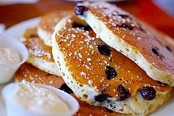

Pancakes

Descriptipm
A pancake (or hotcake, griddlecake, or flapjack) is a flat cake, often thin and round,
prepared from a starch-based batter that may contain eggs, milk and butter and
cooked on a hot surface such as a griddle or frying pan, often frying with oil or
butter.
Archaeological evidence suggests that pancakes were probably the earliest and most
widespread cereal food eaten in prehistoric societies.
Ingredients
- 1 banana, mashed
- 3 eggs
- ¼ cup almond flour
- 1 tablespoon almond butter
- 1 teaspoon vanilla extract
- ½ teaspoon ground cinnamon
- ⅛ teaspoon baking soda
- ⅛ teaspoon baking powder
- 1 teaspoon olive oil, or as needed
Steps
-
Whisk banana, eggs, almond flour, almond butter, vanilla extract, cinnamon, baking
soda, and baking powder together in a bowl until batter is smooth.
-
Heat olive oil on a griddle or skillet over medium-high heat. Drop batter by large
spoonfuls onto the griddle and cook until bubbles form and the edges are dry, 3 to
4 minutes. Flip and cook until browned on the other side, 2 to 3 minutes. Repeat
with remaining batter.